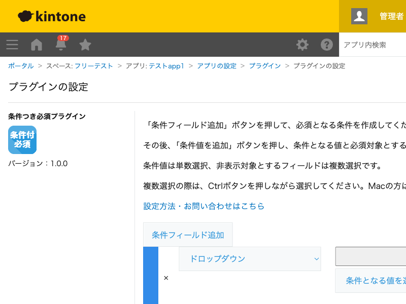

GovAppsプラグイン 安全性を確認できる無料kintoneプラグイン集
ドロップダウンやラジオボタンフィールドが特定の値のときだけ、指定した別のフィールドを必須項目にするプラグインです。 「区分」が「その他」の場合だけ「詳細」を必須にする、といった条件付きの入力チェックを、フィールドを常に必須にせず実現できます。
「区分」ドロップダウンで「その他」を選んだ場合のみ「詳細」フィールドを必須にし、それ以外の値のときは必須にしません。レコードの保存(作成・編集)時に、条件を満たしているのに対象フィールドが未入力だとエラーになります。
条件値ごとに必須対象フィールドを複数選択できるため、「承認区分」が「却下」のときに「却下理由」と「却下日」の両方を必須にする、といった設定も1行でまとめられます。
必須チェックはレコードの保存(作成・編集画面のsubmit)時にのみ行われます。一覧画面のインライン編集は対象外です。
kintoneセキュアコーディングガイドラインに沿って実装時にチェックしています。特に重要な点は次のとおりです。
innerHTMLからtextContentに修正し、アプリ管理者が設定した文字列がそのままHTMLとして解釈されないようにしています。詳細な確認項目・確認日は下記GitHubのチェックリストに全項目を掲載しています。

このプラグインは設定画面を開いたときに1回だけkintone.api()でフォームフィールド一覧を取得します(kintone自身への呼び出し)。
レコード保存時の必須チェック自体はローカルなJavaScript処理のみで完結し、APIは実行しません。